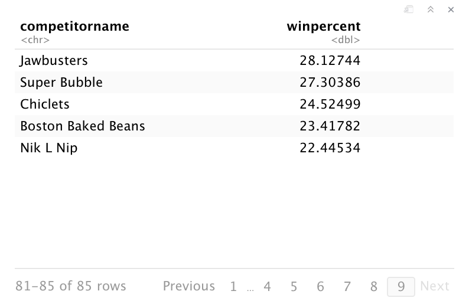
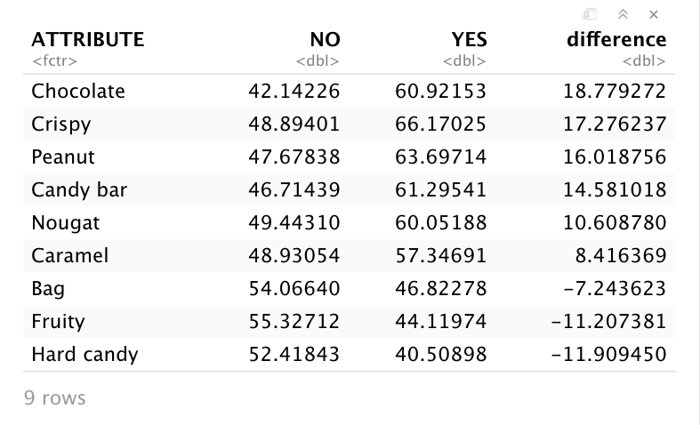
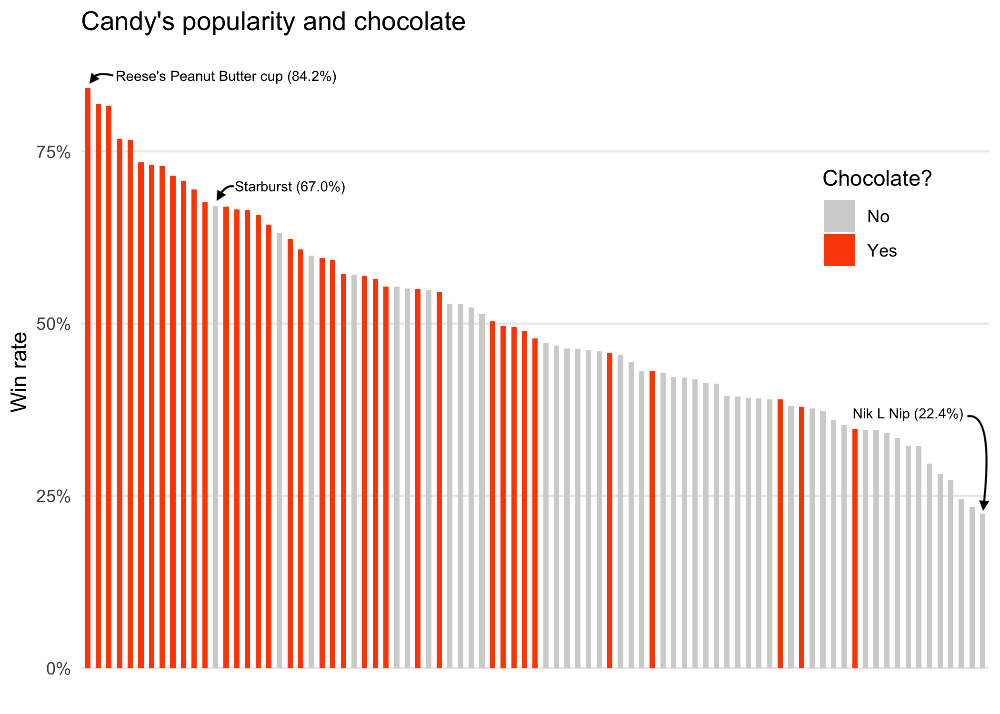
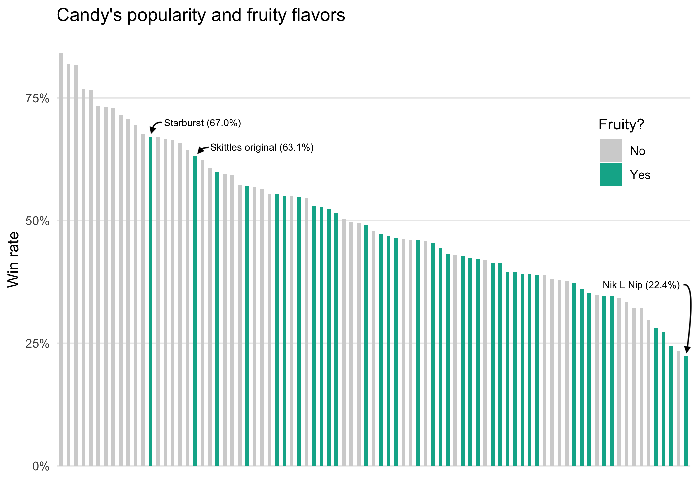
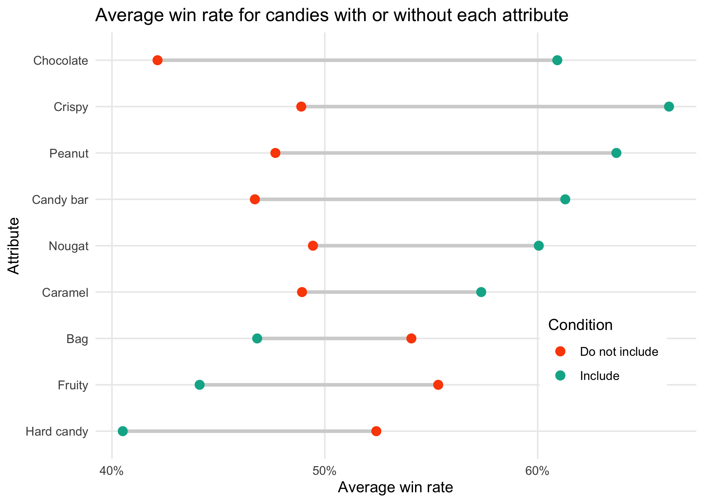
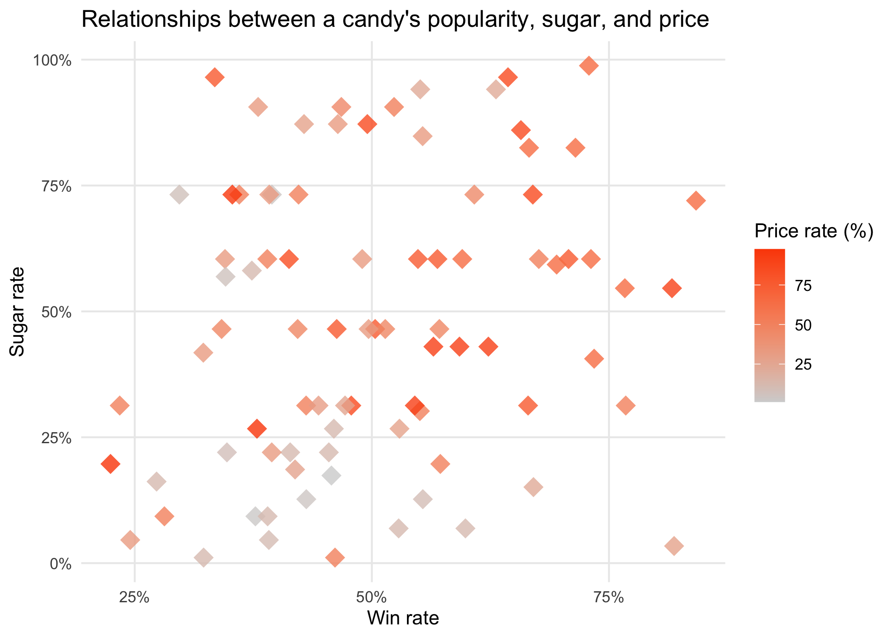
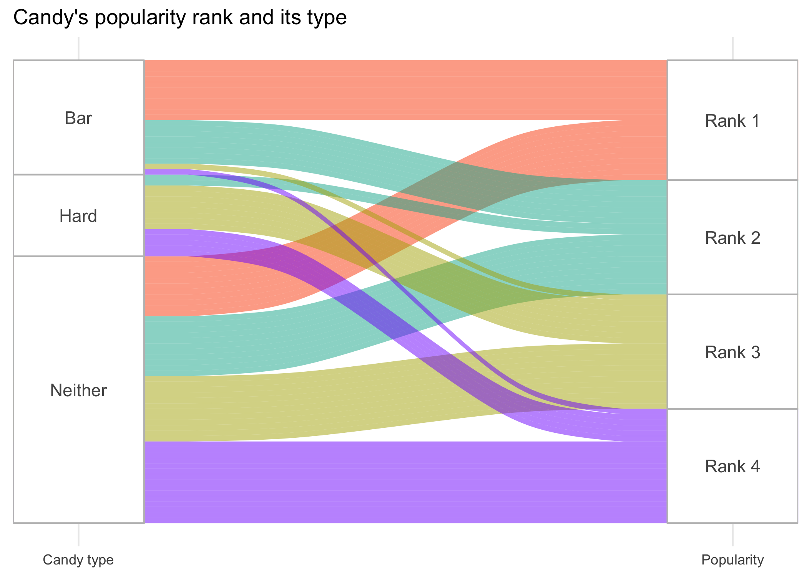

Introducing the data
This deta set was put together in 2017 to determine which Halloween candy is most preferred. According to the project's article, FiveThirtyEight conducted an experimental survey where people are randomly presented two Halloween candies (out of 85 different kinds) and asked to choose the one they prefer.
FiveThirtyEight collected the voting data from 8,371 different IP addresses on about 269,000 candy combinations.
The data set shows the win rate (popularity) for each candy, as well as its attributes.
Load the data
Now, I'm going to load the data from github, replacing some erronious characters.
# Load the data from github candy.data.row <- read_csv( url("https://raw.githubusercontent.com/ fivethirtyeight/data/master/candy-power-ranking/ candy-data.csv")) # Replace the erronious characters candy.data <- candy.data.row %>% mutate(competitorname = str_replace(competitorname, "Õ", "'"))
Rows and columns
In the data set, each row corresponds to a single candy. For each candy, the data includes the following variables. For binary variables, 1 means "Yes", and 0 means "No".
- competitorname: name of the candy
- chocolate: whether the candy contains chocolate
- fruity: whether the candy is fruit flavored
- peanutalmondy: whether the candy contains peanuts, peanut butter, or almonds
- nougat: whether the candy contains nougat
- crispedricewafer: whether the candy contains crisped rice, wafers, or a cookie component
- hard: whether the candy is a hard candy
- bar: whether the candy is a candy bar
- pluribus: whether the candy is one of many candies in a bag or box
- sugarpercent: the percentile of sugar the candy falls under within the data set
- pricepercent: the unit price percentile compared to the rest of the set
- winpercent: the overall win percentage according to 269,000 matchups
Analyzing the data
In this section, I am going to analyze the data and try to answer the following questions.
- What kind of candy is the most/least preferred? What does the ranking of popular candies look like?
- Is there a tendency for a particular attribute to affect win rate? What attributes are more/less popular?
The most preferred candy
First, the most preferred candy is shown below.
# Get the ranking of popular candies
candy.data %>%
select(competitorname, winpercent) %>%
arrange(desc(winpercent))
The image above is a screenshot of a table that shows the top 10 most popular candies. Reese's Peanut Butter cup is the most popular with about an 84% win rate. We can see a lot of people like the brand Reese's.
The screenshot below shows the last page of the table, which contains data about candies with the lowest win rate. The least preferred candy is Nik L Nip, wax bottled mini-candy drinks (I have never heard of it!). It's also worth mentioning that Boston Baked Beans is the second least popular.
Win rate comparison for candy type
Next, I'll analyze the data to see if there's a tendency where a candy's particular attributes affect its popularity. To do this, for each candy attribute, I'm going to compare the difference between average win rates for candies with and without that attribute.
# Define a function to get the average win rate for each attribute get.avg <- function (col) { col = sym(col) candy.data %>% group_by(!!col) %>% summarize(avg.win = mean(winpercent)) } # Get the average win rate for candies with or without each attribute no = c(get.avg("chocolate")[[1,2]], get.avg("fruity")[[1,2]], get.avg("caramel")[[1,2]], get.avg("peanutyalmondy")[[1,2]], get.avg("nougat")[[1,2]], get.avg("crispedricewafer")[[1,2]], get.avg("hard")[[1,2]], get.avg("bar")[[1,2]], get.avg("pluribus")[[1,2]]) yes = c(get.avg("chocolate")[[2,2]], get.avg("fruity")[[2,2]], get.avg("caramel")[[2,2]], get.avg("peanutyalmondy")[[2,2]], get.avg("nougat")[[2,2]], get.avg("crispedricewafer")[[2,2]], get.avg("hard")[[2,2]], get.avg("bar")[[2,2]], get.avg("pluribus")[[2,2]]) # Get a table of attributes and differences in win rate average avg.win <- data.frame( ATTRIBUTE = c("Chocolate", "Fruity", "Caramel", "Peanut", "Nougat", "Crispy", "Hard candy", "Candy bar", "Bag"), NO = no, YES = yes ) %>% mutate(difference = YES - NO) %>% arrange(desc(difference))
The screenshot of the table above shows the biggest difference occurs between the average win rate for chocolate candies and non-chocolate candies.
On the other hand, fruity flavored candies and hard candies are among the least popular on average. If you are thinking to invent a new candy, it would be risky to make it hard or fruity flavored. I'm going to visualize this analysis later in the project.
Visualizing the data
In this section, I'm going to create four kinds of visualizations using parts of the above analysis.
With the visualizations, I'm going to answer the following questions:
- What is each candy's win rate?
- When looking at the averarge win rate comparison analysis, are there any other findings?
- Is there any relationship between a candy's sugar content, or unit price, and its popularity?
- How many candies are hard candies and how many are candy bars? Which type is more popular overall?
The win rate ranking
First, I'm going to visualize the candies' win rates. Since the analysis above shows chocolate candies are the most popular on average, I'm going to visualize how many candies have the "chocolate" attribute, and where they are located in the ranking.
To do that, I'm going to create an ordered bar chart.
candy.data %>%
mutate(chocolate = str_replace(chocolate, "0", "No"),
chocolate = str_replace(chocolate, "1", "Yes")) %>%
ggplot(mapping = aes(
x = reorder(competitorname, desc(winpercent)),
y = winpercent)) +
geom_col(aes(fill = factor(chocolate)), width = 0.5) +
scale_fill_manual(values = c("lightgray", "#FC4C02")) +
scale_y_continuous(breaks = c(0, 25, 50, 75),
label = c("0%", "25%", "50%", "75%")) +
labs(title = "Candy's popularity and chocolate",
y = "Win rate", fill = "Chocolate?") +
annotate("text", x = 14, y = 86, label = "Reese's Peanut Butter cup (84.2%)", size = 2.5) +
annotate("text", x = 20, y = 70, label = "Starburst (67.0%)", size = 2.5) +
annotate("text", x = 78, y = 37, label = "Nik L Nip (22.4%)", size = 2.5) +
theme_minimal() +
theme(
axis.text.x = element_blank(),
axis.title.x = element_blank(),
panel.grid.major.x = element_blank(),
panel.grid.minor = element_blank(),
legend.position = c(0.95, 0.83),
legend.justification = c("right", "top")
)

Each bar represents each candy's win rate. The visualization above shows higher-ranked candies tend to contain chocolate.
The visualization below, created similarly, shows the win rate ranking and whether each candy contains fruity flavors.
This shows that candies that contain fruity flavors are fairly equally distributed, except for the ones in the highest-ranked group.
Average win rate comparison for candies with or without a specific attribute
In the analysis above, we learned that whether a candy has chocolate or not affects its average win rate the most, compared to other candy attributes such as fruity flavors and crispiness.
Now, I'm going to create a Cleveland dot plot to visualize how average win rate varies among different candy attributes. Ultimately, I'm trying to see what kind of candy attributes are more/less popular. Here, I'm using the R Graph Gallery and UC Business Analytics R Programming Guide as a reference.
# Reuse the table from the analysis above
avg.win %>%
ggplot(aes(x = reorder(ATTRIBUTE, difference))) +
geom_segment(aes(xend = ATTRIBUTE, y = NO, yend = YES), color = "lightgray", size = 1.2) +
geom_point(aes(y = NO, color = "No"), size = 2.7) +
geom_point(aes(y = YES, color = "Yes"), size = 2.7) +
scale_color_manual(name = "Condition", labels = c("Do not include", "Include"), values = c("#FC4C02", "#00B098")) +
scale_y_continuous(breaks = c(40, 50, 60),
label = c("40%", "50%", "60%")) +
theme_minimal() +
labs(title = "Average win rate for candies with or without each attribute",
x = "Attribute", y = "Average win rate") +
theme(
panel.grid.minor.x = element_blank(),
legend.position = c(0.95, 0.35),
legend.justification = c("right", "top"),
legend.background = element_rect(color = "white", fill = "white")
) +
coord_flip()

The visualization above reassures that the greatest average win rate difference is determined by whether or not a candy includes chocolate. It also shows that crispy candies have an even higher average win rate than chocolate ones.
If we look at row "Chocolate", we can say chocolate is almost essential to a candy's popularity. On the other hand, if we look at row "Crispy", we can say that the absence of crispiness doesn't affect its popularity as harshly as the absence of chocolate. Rather, crispiness makes a popular candy more popular on average.
Relationships between sugar, price, and win percentiles
Here, I'm making a scatter plot to see if there's a correlation between a candy's sugar content, or unit price, and its popularity.
candy.data %>%
mutate(pricepercent = pricepercent * 100) %>%
ggplot(mapping = aes(x = winpercent, y = sugarpercent)) +
geom_point(aes(color = pricepercent), size = 5, shape = 18, alpha = 0.8) +
scale_color_gradient(low = "lightgray", high = "#FC4C02") +
scale_x_continuous(breaks = c(25, 50, 75),
label = c("25%", "50%", "75%")) +
scale_y_continuous(breaks = c(0, 0.25, 0.5, 0.75, 1),
label = c("0%", "25%", "50%", "75%", "100%")) +
labs(title = "Relationships between a candy's popularity, sugar, and price",
x = "Win rate", y = "Sugar rate", color = "Price rate (%)") +
theme_minimal() +
theme(panel.grid.minor = element_blank())

From this visualization, it doesn't look like there's a notable correlation between sugar and popularity, or price and popularity.
Candy bar or hard candy?
Finally, all the candies can be grouped as either 1) hard candy, 2) candy bar, or 3) neither.
In this section, I'm going to create an alluvial diagram and visualize the relationship between a candy's type and win percentage. Here, I will use the R Graph Gallery and CRAN - R Project as a reference.
First, I'm going to manipulate the data into an alluvial form. To do this, I divide the win rate into four groups (quantiles).
From the top 25% in popularity, I'll label the data as "Rank 1", followed by "Rank 2" (25% ~ 50%), "Rank 3" (50% ~ 75%), and "Rank 4" (bottom 25%).
# Create a column that shows candy's type (bar, hard, or neither) reduced <- candy.data %>% select(hard, bar, winpercent) %>% mutate(type = hard - bar) %>% mutate(type = str_replace(type, "-1", "bar"), type = str_replace(type, "0", "neither"), type = str_replace(type, "1", "hard")) %>% select(winpercent, type) # Divide the winpercent in each quantile low <- quantile(reduced$winpercent, 0.25) median <- quantile(reduced$winpercent, 0.5) high <- quantile(reduced$winpercent, 0.75) # Obtain the data with rank names rank1 <- reduced %>% filter(winpercent >= high) %>% mutate(rank = "Rank 1") rank2 <- reduced %>% filter(winpercent < high, winpercent >= median) %>% mutate(rank = "Rank 2") rank3 <- reduced %>% filter(winpercent < median, winpercent >= low) %>% mutate(rank = "Rank 3") rank4 <- reduced %>% filter(winpercent < low) %>% mutate(rank = "Rank 4") # Combine data reduced2 <- rbind(rank1, rank2, rank3, rank4) %>% select(-winpercent)
Let's visualize!
# Install & load the library install.packages("ggalluvial") library(ggalluvial) # Visualize the data reduced2 %>% ggplot(mapping = aes(axis1 = type, axis2 = rank)) + geom_alluvium(aes(fill = rank)) + geom_stratum(width = 0.2, fill = "white", color = "gray") + geom_text(stat = "stratum", aes(label = after_stat(stratum)), color = "#545454") + scale_x_discrete(limits = c("Candy type", "Popularity"), expand = c(0.05, 0.05)) + scale_fill_manual(values = c("#FC4C02", "#00B098", "#B0AE00", "#7F0FFC")) + labs(title = "Candy's popularity rank and its type") + theme_minimal() + theme(legend.position = "none", axis.text.y = element_blank(), panel.grid.major.y = element_blank(), panel.grid.minor.y = element_blank())
This visualization shows that candy bars tend to be more preferred; about half of candy bars are ranked on the top 25%. Conversely, hard candies are less popular; most of them are ranked below 50%.
However, as shown in the visualization, more than half the candies are labeled "Neither" as the candy type. Those candies include: Reese's Peanut Butter cup, Candy Corn, Peanut butter M&M's, Skittles Original, and so forth. Since a lot of popular candies are labeled as "Neither", more detailed analysis is needed to better see what types of candies are popular among American people.
Now, I'm craving candy...
Happy Halloween!